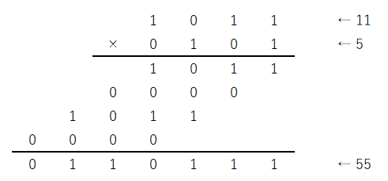

この記事はセルオートマトンによるCPU作成連載記事の16本目です。(2023/01/13)
この連載の最初のほうで加算器の回路を作りましたが、今回は乗算器を作成します。
2進数での掛け算は小学校で習う10進数の筆算と同じやり方です。10進数ではなく2進数になるだけです。2進数では0と1しかありませんので九九を覚える必要がありません。1桁同士の掛け算は単なるAND回路と同じです。
以下は10進数でいうところの 11×5 を2進数で計算する筆算です。

4ビット同士の掛け算では4桁掛ける1桁の掛け算を4回計算して、その合計を求めます。合計を求める際は、4桁の数字の加算を3回順番に実行します。
回路でも縦に4行、横に3列で加算器が並んでいます。一部は半加算器で残りは全加算器です。1桁同士の掛け算をするAND回路は簡単な回路ですので、回路面積ではほとんどを加算器が占めます。
下の回路ではボタンを押すと数字を入力でき、実際に掛け算ができます。